Igreja da Gratidão01 / 12

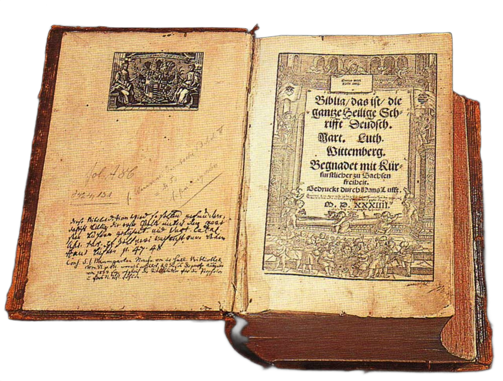
1517 — 2026 · 509 anos
A Reforma
Protestante
A história que mudou a Igreja e o mundo.
A Reforma Protestante02 / 12
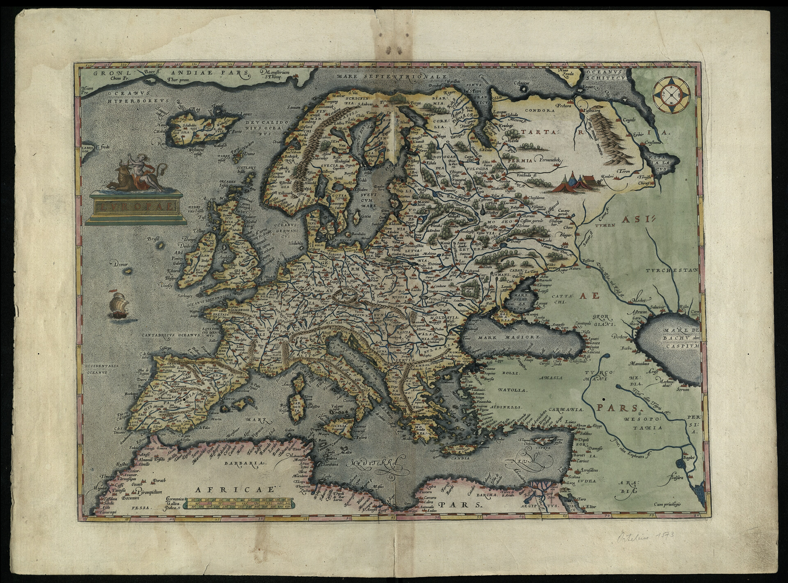
A Igreja precisava
de reforma?
de reforma?
No século XVI, muitos cristãos questionavam práticas e abusos que pareciam se afastar do ensino bíblico.
Fé, poder político e tensões sociais estavam entrelaçados
Wittenberg
A autoridade final era a Igreja ou a Palavra de Deus?
Martinho Lutero03 / 12
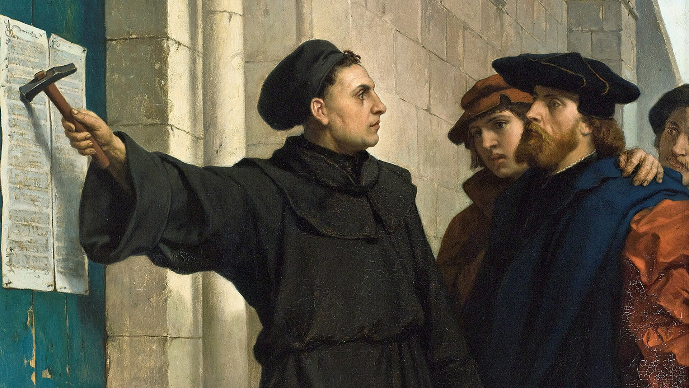
1517
O início da Reforma
Martinho Lutero publicou suas famosas 95 Teses, questionando principalmente o sistema de indulgências.
Uma discussão teológica se transformaria em um movimento que mudaria a história.
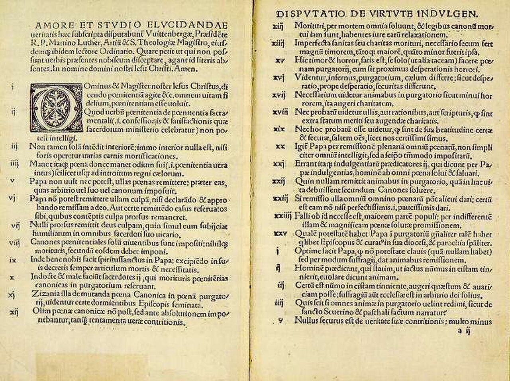
As indulgências04 / 12
O que estava
acontecendo?
acontecendo?
As indulgências estavam sendo promovidas de maneira controversa, levando muitas pessoas a acreditar que benefícios espirituais poderiam ser obtidos através de pagamentos.
A salvação
não está à venda.
não está à venda.
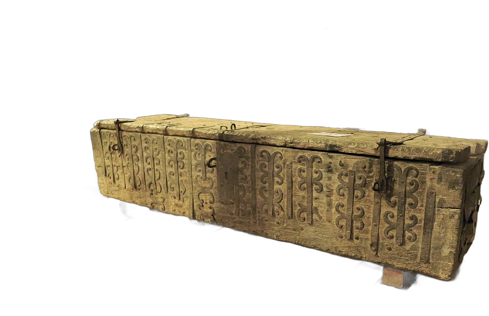
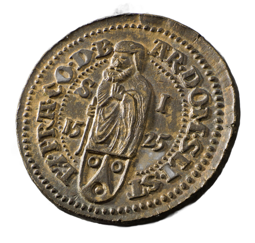
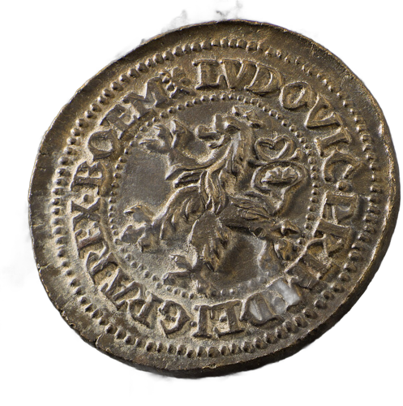
Os Cinco Solas05 / 12
IIIIIIIVV
Sola
Scriptura
A Escritura é a autoridade suprema e suficiente para orientar a fé e a vida cristã.
“Toda a Escritura é inspirada por Deus...”
2 Timóteo 3:16
Os Cinco Solas06 / 12
IIIIIIIVV
Sola
Fide

O pecador é justificado diante de Deus pela fé, e não pode conquistar sua salvação através de obras humanas.
“O justo viverá pela fé.”
Romanos 1:17
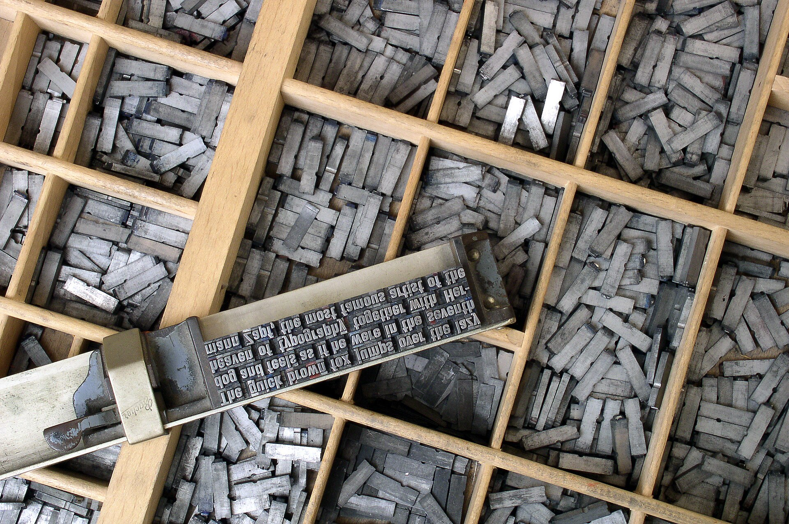
Os Cinco Solas07 / 12
IIIIIIIVV
Sola
Gratia
A salvação é um presente da graça de Deus.
“Pois vocês são salvos pela graça, por meio da fé...”
Efésios 2:8–9
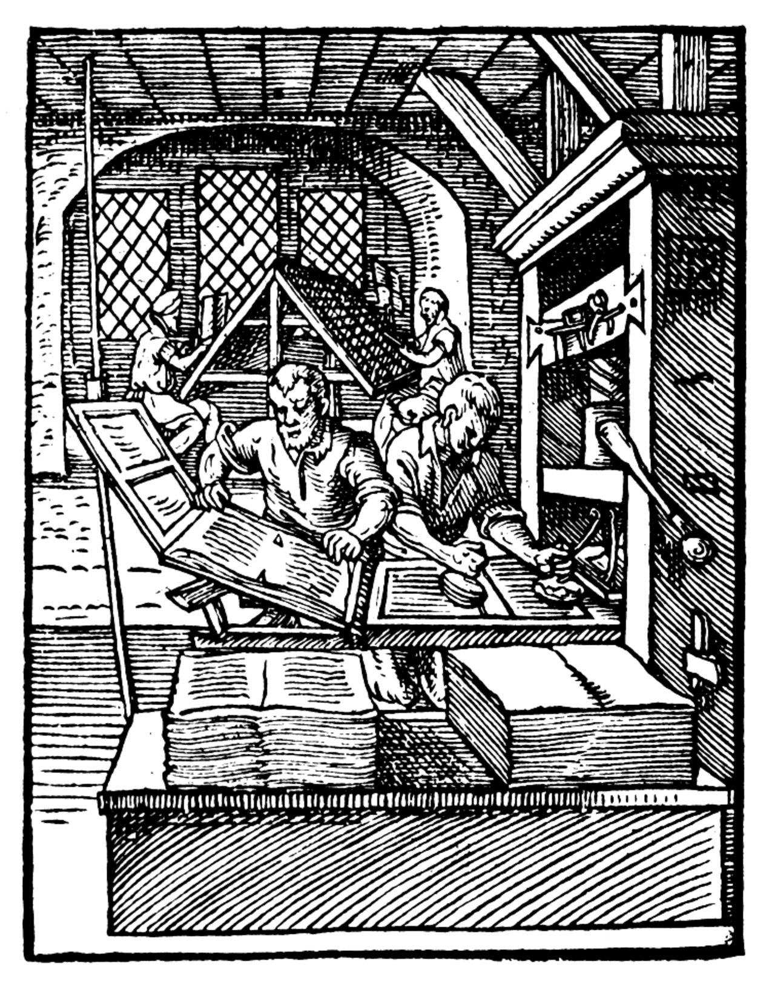
Os Cinco Solas08 / 12
IIIIIIIVV
Solus
Christus
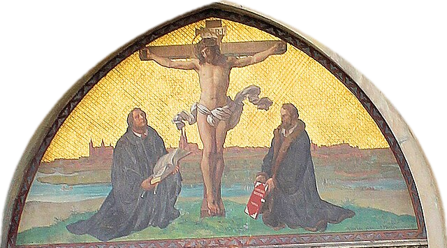
Cristo é o único mediador e o único fundamento da salvação.
Cristo no centro. Sempre.
Os Cinco Solas09 / 12
IIIIIIIVV
Soli Deo
Gloria
Toda a vida, toda a salvação e toda a glória pertencem a Deus.
Não para a glória do homem. Para a glória de Deus.
O legado10 / 12
A Reforma não foi apenas um evento.
Ela influenciou a teologia, a educação, a política, a cultura, a tradução da Bíblia e a forma como milhões de cristãos compreendem sua fé até hoje.
Uma história complexa: envolveu fé, poder, conflitos e divisões — e não pode ser reduzida a heróis e vilões.
Reflexão final11 / 12
Ecclesia reformata,
semper reformanda
A Igreja deve estar sempre sendo corrigida e renovada pela Palavra de Deus.
Pergunta para você
Nossa fé está sendo construída sobre tradições humanas ou sobre as Escrituras?
Igreja da Gratidão12 / 12
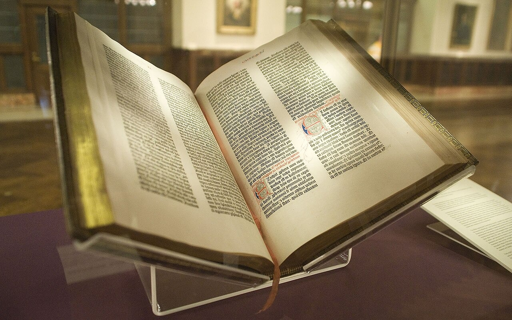
Reformados
pela Palavra.
pela Palavra.
Centrados
em Cristo.
em Cristo.
Para a glória
de Deus.
de Deus.
Salve este carrossel e compartilhe com alguém que precisa conhecer essa história.
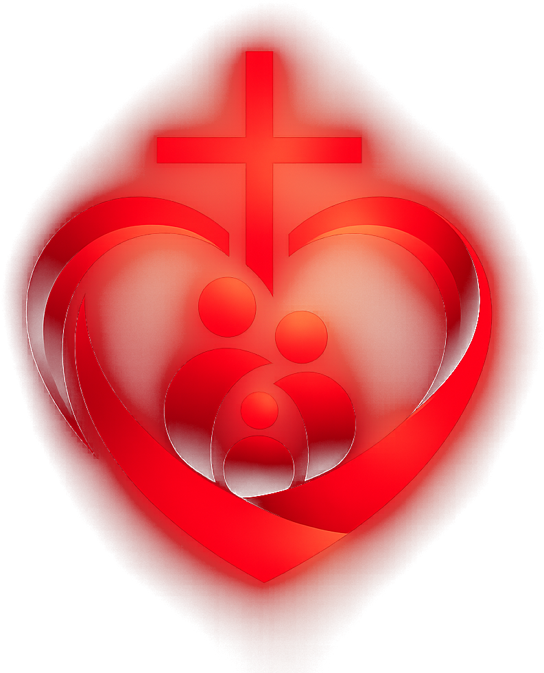
@igrejadagratidao